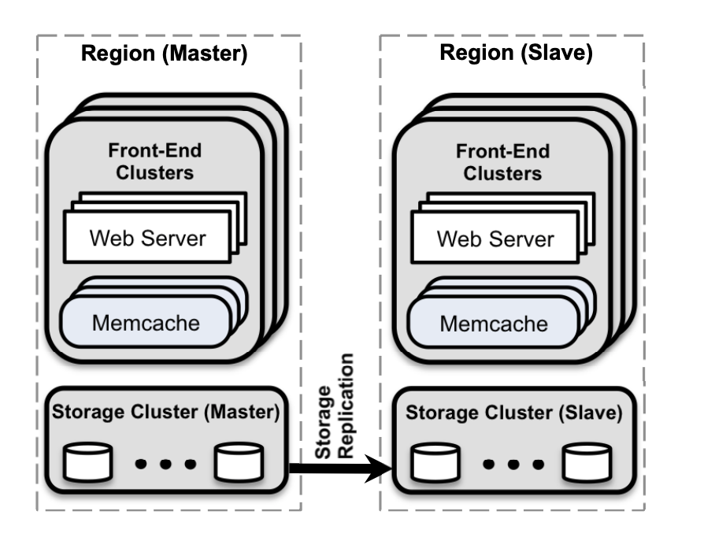

Facebook Use of Memcache as a distributed Key-Value Store
Facebook, world's largest social network uses memcache as a building block to construct and scale a distributed key-value store. Their system handles billions of requests per second and holds trillions of items to deliver a rich experience for over a billion users around the world.
Introduction
Hundreds of millions of people use these networks every day and impose computational, network, and I/O demands that traditional web architectures struggle to satisfy. A social network’s infrastructure needs to (1) allow near realtime communication, (2) aggregate content on-the-fly from multiple sources, (3) be able to access and update very popular shared content and (4) scale to process millions of user requests per second. In this article we discuss the journey scaling from a single cluster of servers to multiple geographically distributed clusters. This memcache solution is currently processing over a billion requests per second and storing trillions of items. Memcache is an open-source implementation of an in-memory hash table—as it provides low latency access to a shared storage pool at low cost. This article includes three main contributions: (1) Description of the evolution of Facebook’s memcached based architecture. (2) Identify enhancements to memcached that improve performance and increase memory efficiency. (3) Mechanisms that improve the ability to operate the system at scale.
Overview
There are few things which we need to consider. a) Users read much more than they write, i.e they view much more data than they asctually upload b) Read operations fetch data from a variety of sources such as MySQL databases, HDFS installations, and backend services. This requires a flexible caching strategy able to store data from disparate sources. Memcached provides a simple set of operations (set, get, and delete) that makes it attractive as an elemental component in a large-scale distributed system. The open-source version Facebook started with provides a singlemachine in-memory hash table. In this article, we talk about how Facebook took this basic building block, made it more efficient, and used it to build a distributed key-value store that can process billions of requests per second
Query Cache
Facebook relies on memcache to lighten the read load on our databases. When a web server needs data, it first requests the value from memcache by providing a string key. If the item addressed by that key is not cached, the web server retrieves the data from the database or other backend service and populates the cache with the key-value pair. For write requests, the web server issues SQL statements to the database and then sends a delete request to memcache that invalidates any stale data. Deleting cached data is a better option instead of updating it because deletes are idempotent.
Overall Architecture
The figure illustrates the final architecture in which Facebook organizes co-located clusters into a region and designates a master region that provides a data stream to keep non-master regions up-to-date. For an application like Facebook, its better to expose slightly stale data in exchange for insulating a backend storage service from excessive load. Its important to consider the challenges of scaling to thousands of servers within a cluster. At this scale 2 most important things to focus on 1) Reducing Latency of fetching cached data 2) Load Imposed due to a cache miss
Reducing Latency
Whether a request for data results in a cache hit or miss, the latency of memcache’s response is a critical factor in the response time of a user’s request. A single user web request can often result in hundreds of individual memcache get requests. For example, loading one of Facebook's popular pages results in an average of 521 distinct items fetched from memcache. Facebook provisions hundreds of memcached servers in a cluster to reduce load on databases and other services. Items are distributed across the memcached servers through consistent hashing. Thus web servers have to routinely communicate with many memcached servers to satisfy a user request. As a result, all web servers communicate with every memcached server in a short period of time. This all-to-all communication pattern can cause incast congestion or allow a single server to become the bottleneck for many web servers. Data replication often alleviates the single-server bottleneck but leads to significant memory inefficiencies in the common case. Latency is reduced mainly by focusing on the memcache client, which runs on each web server.
Clients use UDP and TCP to communicate with memcached servers. Facebook relies on UDP for get requests to reduce latency and overhead. Since UDP is connectionless, each thread in the web server is allowed to directly communicate with memcached servers directly, bypassing mcrouter, without establishing and maintaining a connection thereby reducing the overhead. The UDP implementation detects packets that are dropped or received out of order (using sequence numbers) and treats them as errors on the client side. It does not provide any mechanism to try to recover from them. Under peak load, memcache clients observe that 0.25% of get requests are discarded. About 80% of these drops are due to late or dropped packets, while the remainder are due to out of order delivery. Clients treat get errors as cache misses, but web servers will skip inserting entries into memcached after querying for data to avoid putting additional load on a possibly overloaded network or server.
For reliability, clients perform set and delete operations over TCP through an instance of mcrouter running on the same machine as the web server. For operations where we need to confirm a state change (updates and deletes) TCP alleviates the need to add a retry mechanism to our UDP implementation. Web servers rely on a high degree of parallelism and over-subscription to achieve high throughput. The high memory demands of open TCP connections makes it prohibitively expensive to have an open connection between every web thread and memcached server without some form of connection coalescing via mcrouter. Coalescing these connections improves the efficiency of the server by reducing the network, CPU and memory resources needed by high throughput TCP connections. Relying on UDP can lead to a 20% reduction in latency to serve requests.